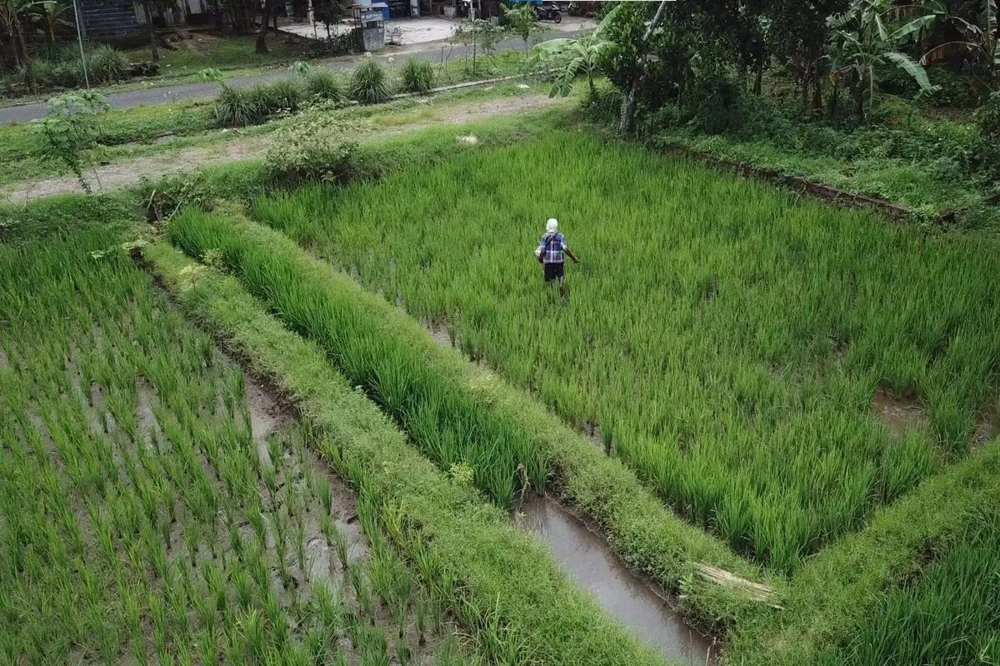
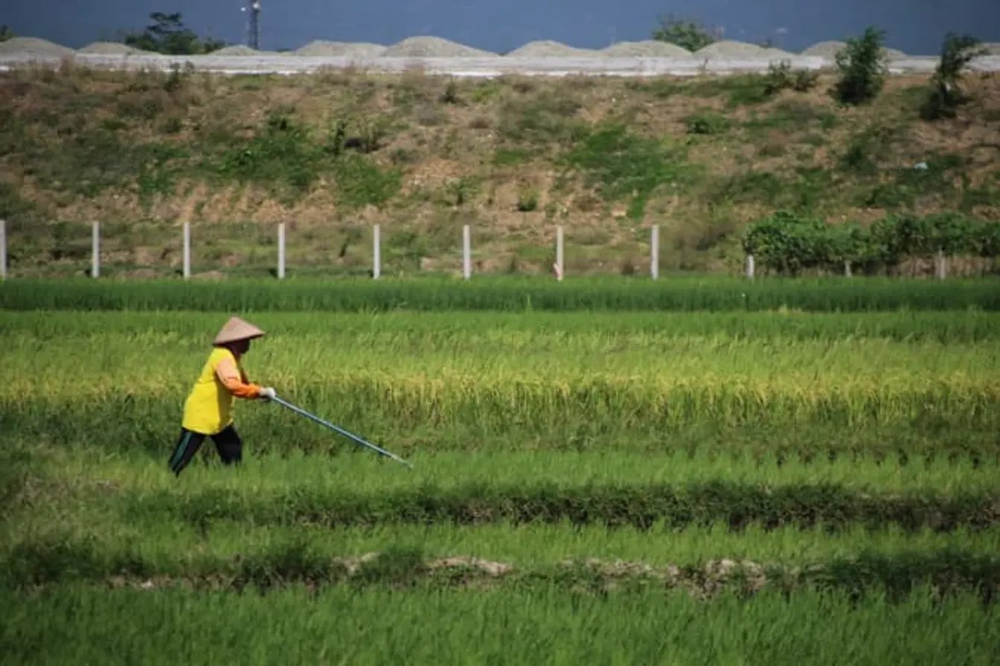

Kabupaten Klaten · 2017–2024
Jaga Tani: pantau sawah yang berkurang, lihat di mana
Klaten berada di koridor Solo–Yogyakarta, wilayah yang berkembang cepat. Jaga Tani menunjukkan berapa banyak lahan pertanian yang berkurang dan di mana, memakai statistik resmi dan peta hasil klasifikasi citra Sentinel-2.
Buka peta interaktifBaca materi dasar

Total lahan pertanian
Data berasal dari DKPP, LPPD, Statistik Sektoral, BPS, dan RPJMD. Rincian sumber per tahun ada di halaman Data.
Mau lihat apa?
🗺️PetaPeta interaktif dengan panel layer: citra Sentinel-2, lahan pertanian per tahun, perubahan, dan hotspot.
◧BandingkanDua peta berdampingan untuk dua tahun yang kamu pilih.
🎞️SpasiotemporalAnimasi dan peta berseri luas lahan pertanian dari tahun ke tahun.
📈DashboardLaju perubahan per tahun, dan perbandingan statistik dengan hasil peta.
📚MateriLatar belakang alih fungsi lahan di Klaten, dirangkum dari jurnal dan skripsi.
🗂️DataTabel lengkap statistik, bisa diunduh sebagai CSV.